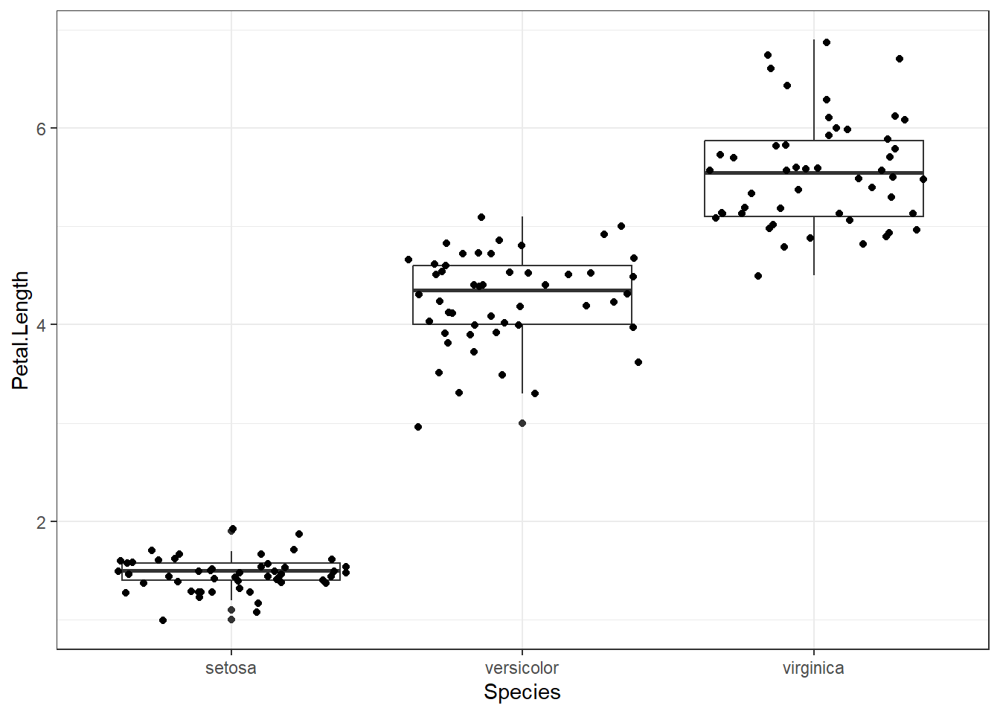

load("data/qz_a.RData")DS101 QZ 2024
Date and Location
Date: 8 May (Wed) 09:00 - 11:00
Location: Class Room
Notice
- Quiz will be administered through Google Forms.
- Please bring your laptop for the quiz.
- You are allowed to access any information through the Internet
- However, communication with others is strictly prohibited.
- Do not use any messaging apps (e.g., KakaoTalk, TikTok, Line, WeChat, etc.) during the quiz.
- Upon completion of the quiz, you are required to submit your code.
Submit your answers
Solve the problem and submit your answer by entering it in the Google form at the link below.
https://forms.gle/aiEqgtjGqCuY5Emx6
QZ content
PART I. Basic Syntax in R
- List
- Vector
- Matrix
- Data.frame
- Data wrangling
PART II. Data Wrangling with tidyverse
PART III. Data Visualization
PART IV. Advanced
QZ
PART I. Basic Syntax in R
Please download the data below
Locate “qz_a.RData” at your working directory and load the file
Then you will see the object “KMP_list_qz_a” in the Environment window of RStudio.
OK, then let’s begin the qz.
List
- How many elements are in the list?
- 4
- 5
- 6
- 7
- What is the name of the second element of the list?
- vector
- matrix
- p20
- None
- What is the data type of the first element in the list?
- vector
- matrix
- data.frame (tibble)
- list
- Which of the following statements correctly creates the sixth element of the list as an empty list?
KMP_list_qz_a[[6]] <- list(0)KMP_list_qz_a[6] <- list()KMP_list_qz_a[[6]] <- empty_list(0)KMP_list_qz_a[6] <- list(0)
- Which of the following correctly describes the creation of a vector {2,4,6,8,10} using the seq function and placing it as the first element of the sixth element of a list?
KMP_list_qz_a[[6]][[1]] <- seq(2,10,2)KMP_list_qz_a[[6]][1] <- seq(2,10,2)KMP_list_qz_a[[6]][1] <- c(2,4,6,8,10)KMP_list_qz_a[6][[1]] <- seq(2,10,2)
- Which of the following options correctly interprets the meaning of the code
KMP_list_qz_a[[6]][[1]][4]?
- Access the fourth element of the second element of the sixth element of the list KMP_list_qz_a.
- Assign the value 4 to the fourth element of the first element of the sixth element of the list KMP_list_qz_a.
- Retrieve the fourth element of the first sub-list within the sixth element of the list KMP_list_qz_a.
- Remove the fourth element from the first sub-list within the sixth element of the list KMP_list_qz_a.
Vector
Let a vector X be like below
X <- KMP_list_qz_a[[3]]- How many missing values are in vector X?
- 2
- 3
- 4
- 5
- What is the position of value 41 in X? (Note: it’s not about the value of X[41])
- 33
- 43
- 53
- 63
- Which of the following expressions correctly represents the number of elements in vector X where the values are not missing and are less than 27?
length(X[X < 27 & !is.na(X)])length(X[X < 27 | !is.na(X)])length(X[X >= 27 & !is.na(X)])length(X[X >= 27 | !is.na(X)])
Matrix
Let a matrix M be like below
M <- KMP_list_qz_a[[4]]- Which of the following statements is true regarding the expression
M[3,3],t(M)[3,3], andM[9]?
- M[3,3] is equivalent to t(M)[3,3] but different from M[9].
- M[3,3] is equivalent to M[9] but different from t(M)[3,3].
- M[3,3] is different from both t(M)[3,3] and M[9].
- M[3,3], t(M)[3,3], and M[9] are all equivalent.
- Which of the following correctly describes the output of the given code snippets?
# 1
apply(M, 2, mean)[1] 2 5 8 11 14# 2
apply(M, 1, mean)[1] 7 8 9- The first snippet calculates the average value of each column in matrix M, while the second snippet calculates the average value of each row.
- The first snippet calculates the average value of each row in matrix M, while the second snippet calculates the average value of each column.
- Both snippets calculate the average value of each element in matrix
- The snippets produce errors because the apply function does not support averaging operations
Data.frame
Let DF1 and DF2 as like below
DF1 <- KMP_list_qz_a[[1]]
DF2 <- KMP_list_qz_a[[2]]- How many variables in DF1?
- 8
- 10
- 12
- 14
- How many people (observations) in DF2?
- 40
- 50
- 60
- 70
- In DF1, how many people are in the category of 3000-4000K of the income?
- 5
- 6
- 7
- 8
- In DF1, how many “Male” & “Never married” people, and how many SKT (Telecom) users among them? (Use the variable: telecom)
- 5, 1
- 5, 3
- 3, 1
- 3, 3
- How many people who used an LG smartphone in 2019 (in DF1) switched to a Samsung smartphone in 2020 (in DF2)?
- 3
- 5
- 7
- 9
- Of those who used an LG smartphone in 2019, how many people still use LG in 2020?
- None of them
- 2
- 4
- 6
The code processes a text containing lyrics of “Let It Be” by The Beatles, removing newline characters and commas using the gsub function, then creates a word cloud visualization to display the frequency of words in the song.
letitbe <- c("When I find myself in times of trouble, Mother Mary comes to me
Speaking words of wisdom, let it be
And in my hour of darkness she is standing right in front of me
Speaking words of wisdom, let it be
Let it be, let it be, let it be, let it be
Whisper words of wisdom, let it be
And when the broken hearted people living in the world agree
There will be an answer, let it be
For though they may be parted, there is still a chance that they will see
There will be an answer, let it be
Let it be, let it be, let it be, let it be
There will be an answer, let it be
Let it be, let it be, let it be, let it be
Whisper words of wisdom, let it be
Let it be, let it be, let it be, let it be
Whisper words of wisdom, let it be, be
And when the night is cloudy there is still a light that shines on me
Shinin' until tomorrow, let it be
I wake up to the sound of music, Mother Mary comes to me
Speaking words of wisdom, let it be
And let it be, let it be, let it be, let it be
Whisper words of wisdom, let it be
And let it be, let it be, let it be, let it be
Whisper words of wisdom, let it be")
letitbe_rm <- gsub("\n", "",letitbe)
letitbe_rm <- gsub(",", "",letitbe_rm)
word_list <- strsplit(letitbe_rm, split = " ")
word_vec <- unlist(word_list)
word_count <- sort(table(word_vec), decreasing = T)
df_word_count <- data.frame(word_count)
library(wordcloud2)
wordcloud2(df_word_count)- What is the purpose of using the
gsubfunction in the provided code snippet?
- It converts the text into a word vector for further analysis.
- It prepares the text data by removing unwanted characters like newline characters and commas.
- It calculates the frequency of each word in the text.
- It generates a word cloud visualization based on the frequency of words in the text.
PART II. Data Wrangling with tidyverse
Download the gapminder package for using gapminder dataset.
# install.packages("gapminder")Import required libraries
library(gapminder)
library(tidyverse)── Attaching core tidyverse packages ──────────────────────── tidyverse 2.0.0 ──
✔ dplyr 1.1.4 ✔ readr 2.1.5
✔ forcats 1.0.0 ✔ stringr 1.5.1
✔ ggplot2 3.5.1 ✔ tibble 3.2.1
✔ lubridate 1.9.3 ✔ tidyr 1.3.1
✔ purrr 1.0.2
── Conflicts ────────────────────────────────────────── tidyverse_conflicts() ──
✖ dplyr::filter() masks stats::filter()
✖ dplyr::lag() masks stats::lag()
ℹ Use the conflicted package (<http://conflicted.r-lib.org/>) to force all conflicts to become errorsThe code works like below:
filters only 1962 data from gapminder data,
selects only country and gdpPercap variables,
renames gdpPercap variables to gdp_1962,
and assigns it to object ‘gap_1962’.
- Choose the one that fits the blank (a), (b), (c)
A) (a) filter (b) select (c) rename
B) (a) subset (b) keep (c) relabel
C) (a) arrange (b) pick (c) change_name
D) (a) extract (b) choose (c) modify
The code below did the same procedure with above but for the year 2007. (a), (b), (c) are the same with the answers above.
The code below finds the difference in gdpPercap from 1962 to 2007 and sorts them in descending order of growth (gdp_gap).
- Choose the one that fits the blank (a), (b), (c)
A) (a) inner_join (b) transform (c) setNames
B) (a) left_join (b) mutate (c) desc
C) (a) with (b) modify_if (c) -
D) (a) left_join (b) apply (c) recast
- In the result above, what is the rank of “Korea, Rep.” in terms of
gdp_gap?
A) 9
B) 11
C) 13
D) 16
- Using the codes above, create a table for population growth from 1962 to 2007, and choose the country with the highest population growth during the period.
A) China
B) India
C) Indonesia
D) Brazil
PART III. Data Visualization
The following is the code to draw the graph below using the gdp_gap_1962_2007 table created above.
- Fill in the blanks.
A) (a) gdp_gap (b) country (c) identity
B) (a) country (b) year (c) “dodge”
C) (a) country (b) gdp_gap (c) “identity”
D) (a) gdp_gap (b) country (c) “identity”
Let’s use ‘mtcars’ dataset
head(mtcars) mpg cyl disp hp drat wt qsec vs am gear carb
Mazda RX4 21.0 6 160 110 3.90 2.620 16.46 0 1 4 4
Mazda RX4 Wag 21.0 6 160 110 3.90 2.875 17.02 0 1 4 4
Datsun 710 22.8 4 108 93 3.85 2.320 18.61 1 1 4 1
Hornet 4 Drive 21.4 6 258 110 3.08 3.215 19.44 1 0 3 1
Hornet Sportabout 18.7 8 360 175 3.15 3.440 17.02 0 0 3 2
Valiant 18.1 6 225 105 2.76 3.460 20.22 1 0 3 1- The value obtained by dividing horsepower (
hp) by weight (wt) is called marginal horsepower (hp_by_wt). Choose the car with the largesthp_by_wtamong the cars in the mtcars data.
A) Lotus Europa
B) Ford Pantera
C) Camaro Z28
D) Maserati Bora
- Execute the code below to check the graph, and choose the relationship between the car’s weight (wt) and fuel efficiency (mpg).
mtcars %>%
ggplot(aes(x=wt, y=mpg)) +
geom_point()
A) positive relationship
B) negative relationship
C) no correlation
D) We cannot tell with this graph
- Execute the code below to check the correlation between variables, and choose a variable relationship that is not a positive relationship.
mtcars %>%
select(mpg, disp, hp, drat, wt) %>%
plot
A) disp ~ hp
B) wt ~ hp
C) drat ~ mpg
D) mpg ~ disp
PART IV. Advanced
The code below expresses the correlation between variables in another way.
- Which of the following is not suitable as an advantage compared to the previous graph?
# install.packages("corrplot")
library(corrplot)corrplot 0.92 loadedmtcars %>%
select(mpg, disp, hp, drat, wt) %>%
cor %>%
corrplot(method="circle")A) Easy to find whether the relationship of two variables is positive or negative
B) It can be understood at a glance
C) More colorful
D) It can check each observation in the graph
The code below shows the distribution of petal length variables in iris data using geom_density. Run the code to check the graph and answer the questions.
iris %>%
ggplot(aes(x=Petal.Length, colour=Species, fill=Species)) +
geom_density(alpha=.3) +
geom_vline(aes(xintercept=mean(Petal.Length),
colour=Species),
linetype="dashed", color="grey", size=1)+
xlab("Petal Length (cm)") +
ylab("Density")Warning: Using `size` aesthetic for lines was deprecated in ggplot2 3.4.0.
ℹ Please use `linewidth` instead.- If by chance you found an iris and the petal length was 1.5 cm, what is the species of this iris?
A) Setosa
B) Versicolor
C) Virginica
The graph below is an interactive graph with color classification for each species in the scatter plot for the relationship between Petal Length and Petal Width.
- Hover your mouse cursor over a dot on the graph and Choose the answer which is not an advantage of this type of graph.
# install.packages("plotly")
library(plotly)
iris %>%
plot_ly(
x = ~Petal.Length,
y = ~Petal.Width,
color = ~Species,
type = "scatter",
mode = "markers") %>%
layout(scene = list(xaxis = list(title = 'Petal length'),
yaxis = list(title = 'Petal width'))) A) Information on the specific observation can be easily obtained
B) You can zoom in by specifying the range
C) You can expand the scale with the mouse
D) You can freely change the X-axis’s and Y-axis’s variables
- Modify the graph code on the left as the graph on the right.

# Graph in the left side
iris %>%
ggplot(aes(x=Species, y=Petal.Length)) +
geom_boxplot() +
geom_jitter()+
theme_bw() 
- Modify the graph code on the left as the graph on the right.
# Graph in the left side
add_text <- data.frame(Species="setosa",
Petal.Length=6,
lab="Wonderful!")
iris %>%
ggplot(aes(x=Species, y=Petal.Length)) +
geom_boxplot() +
geom_text(data=add_text, aes(label=lab))+
theme_bw() - Modify the graph code on the top as the graph on the bottom.

# Graph on the top
gapminder %>%
filter(country %in% c("Korea, Rep.", "Korea, Dem. Rep.")) %>%
ggplot(aes(x=gdpPercap/1000, y=lifeExp, col=country)) +
geom_point()